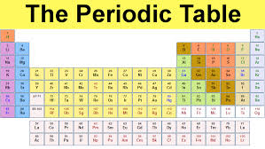
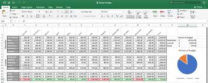
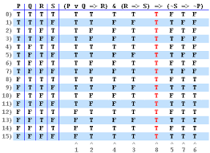
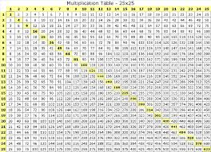

| Name | Surname | Favorite Sauce | Home Town |
| Jamie-Lee | Cupido | Perninaise | Cape Town |
| Speciose | Kamanzi | Mushroom Sauce | Cape Town |
| Diteboho | Moahloli | Chilli Sauce | Cape Town |
| Chad | Masella | Tomatoe Sauce | Cape Town |
| John-Paul | Golding | Nandos peri-peri | Cape Town |
| Odwa | Kula | Steers BBQ | Cape Town |
| Jadon | Paulse | BBQ | Cape Town |
| Rustin | Cassiem | Chilli | Cape Town |
| Um'r | Rajap | Peri-Peri | Cape Town |
| Viccario | Williams | Sweet Chilli | Cape Town |
| Clair | Jacobs | Mushroom Sauce | Cape Town |
| Aqueelah | Taljaard | Mayonaise | Cape Town |
| Reece | Dodgen | Nandos peri-peri | Cape Town |
| Miguel | Jacobs | Nandosp peri-peri | Cape Town |
| Claude | King | Tabasco | Johannesburg |
| Jean | Windvogel | Chilli Sauce | Cape Town |
| Micheal | Notyahawa | Tomatoe Sauce | Cape Town |
The periodic table is a tabular arrangement of the chemical elements, ordered by their atomic number, electron configuration, and recurring chemical properties, whose adopted structure shows periodic trends
The three most common general uses for spreadsheet software are to create budgets, produce graphs and charts, and for storing and sorting data. Within business spreadsheet software is used to forecast future performance, calculate tax, completing basic payroll, producing charts and calculating revenues.
A truth table is a handy little logical device that shows up not only in mathematics, but also in Computer Science and Philosophy, making it an awesome interdisciplinary tool. The notation may vary depending on what discipline you’re working in, but the basic concepts are the same.
Mathematical tables are lists of numbers showing the results of calculation with varying arguments, before calculators were cheap and plentiful, people would use such tables to simplify and drastically speed up computation. Tables of logarithms and trigonometric functions were common in math and science textbooks.
